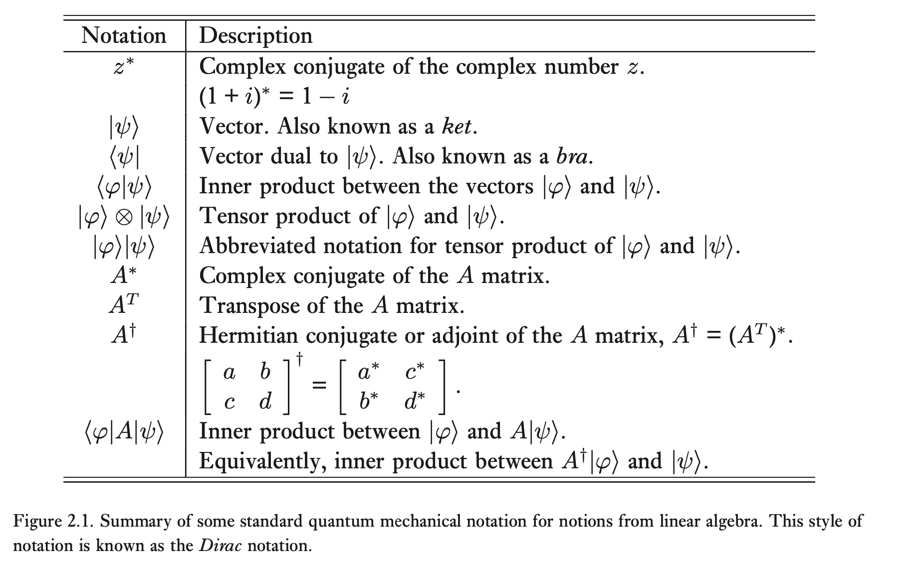

Quantum Mechanics
Sources
- Principles of Quantum Mechanics by Shankar
- Introduction to Quantum Mechanics, Griffiths
- Linear Algebra Done Right by Axler
- State space and operators by Bart Sorée, ch1 of his course
Shankar Mathematical Introduction
(Shankar)
 (image source: Chuang and Nielsen)
Inner product spaces
Definition
An inner product space is a vector space with an inner product. Inner products can be seen as a generalization of the dot product, as dot products are only defined for \(\mathbb R\) and not other fields such as \(\mathbb C\).
How is the inner product for complex vector spaces obtained?
Let us consider the case of complex numbers to obtain this generalization. \(\lambda = a + bi\) with \(a, b \in \mathbb R\).
- Absolute value of λ: \(\vert \lambda \vert = \sqrt{a^2 + b^2}\).
- Complex conjugate of λ: \(\bar \lambda = a - bi\).
- \(\vert \lambda \vert ^2 = a^2 + b^2 = (a + bi) (a - bi) = \lambda \bar \lambda\)
Consider now a vector of complex numbers: \(z = (z_1, \ldots, z_n) \in \mathbb C^n\). Then, the magnitude of this vector is defined as follows: \[\vert \vert z \vert \vert = \sqrt{\vert z_1\vert^2 + \cdots + \vert z_n\vert^2}\].
Because we want the magnitude \(\vert \vert z \vert \vert\) to be nonnegative, we take the absolute values of each \(z_n\). Note that because of the third property above: \[\vert \vert z \vert \vert^2 = z_1 \bar{z_1} + \cdots + z_n \bar{z_n}\].
This already gives us an idea of what the inner product will look like, as \(\langle z, z \rangle = \vert \vert z \vert \vert ^2\). This suggests that the inner product \(w = (w_1, \ldots, w_n) \in \mathbb C^n\) with \(z\) is: \[w_1 \bar{z_1} + \cdots + w_n \bar{z_n}\].
The result of the complex inner product is a complex number. It is a linear functional.
Inner product with Dirac notation
The inner product between two kets \(\vert V \rangle\) and \(\vert W \rangle \) is defined as \(\langle V \vert W \rangle\). \(V\) and \(W\) are vectors with an orthonormal basis, that is, we take the inner product between the components of those two kets with respect to an orthonormal basis.
There are 3 important axioms of the inner product.
-
\(\langle V \vert W \rangle = \langle W \vert V \rangle^\ast \) skew-symmetry
Derivation.
\begin{align*} \langle W \vert V \rangle^\ast &= \sum_i (w_i^\ast v_i)^\ast \\ &= \sum_i w_i v_i ^\ast = \sum_i v_i^\ast w_i \\ &= \langle V \vert W \rangle \\ \end{align*}
This makes the complex inner product sensitive to the order of the two factors. For real inner products, we have that \(\langle V \vert W \rangle = \langle W \vert V \rangle\) because the complex conjugate of a real number is equal to itself.
-
\(\langle V \vert V \rangle \geq 0\) and is \(0 \iff \vert V \rangle = \vert 0 \rangle \) positive semidefiniteness
This means that \( \langle V \vert V \rangle \) is not only real but also positive semidefinite, and only vanishes if the vector itself does.
-
Linearity with respect to the 2nd argument, antilinearity with respect to the first argument. Essentially:
\[\langle V \vert( a \vert W \rangle + b \vert Z \rangle) \rangle = a \langle V \vert W \rangle + b \langle V \vert Z \rangle \] \[\langle (a \vert W \rangle + b \vert Z \rangle) \vert V \rangle = a^\ast \langle W \vert V \rangle + b^\ast \langle Z \vert V \rangle \]
The kets \(\vert V \rangle \) and \(\vert W \rangle \) are uniquely defined by their components in a given basis. Hence: \(\vert V \rangle = \begin{bmatrix} v_1 \\ v_2 \\ \vdots \\ v_n \end{bmatrix} \)and \(\vert W \rangle = \begin{bmatrix} w_1 \\ w_2 \\ \vdots \\ w_n \end{bmatrix} \) with respect to a basis (we multiply these component vectors by their basis and obtain the resulting vector irrespective of the basis).
Then, the inner product \(\langle V \vert W \rangle \) is the matrix product of the transpose conjugate of the column vector of \(\vert V \rangle \) with the column vector representing \(\vert W \rangle \): \[\langle V \vert W \rangle = [v_1^\ast, \ldots, v_n^\ast ] \begin{bmatrix} w_1 \\ \vdots \\ w_n \end{bmatrix}\]
Expansion of vectors in an Orthonormal Basis
Expanding a vector \(\vert V \rangle \) in an orthonormal basis means we wish to find the components. Assume we have an orthonormal basis consisting of kets \(\vert i \rangle \).
Start off with the ket’s components and its basises. This is just a multiplication for each ket. \[\vert V \rangle = \sum_i v_i \vert i \rangle \]
Take the dot product of both sides with the ket t\( \vert j \rangle \). This is another basis vector and allows us to specify the \(j\)-th component we wish to find. \[\langle j \vert V \rangle = \sum_i v_i \langle j \vert i \rangle \]
The sum on the right reduces to the Kronecker delta because we have an inproduct between basis vectors: either we have a 0 if the components are perpendicular (\(i \neq j\)) or we have a 1 when they are one and the same (\(i=j\)). As a result, only the case \(i=j\) remains of the sum. \[\langle j \vert V \rangle = v_j \]
So, to find the jth component of a vector, we take the dot product with the jth unit vector. \[\vert V \rangle = \sum_i \vert i \rangle \langle i \vert V \rangle \] (≡ get the component, then don’t forget to multiply times the unit vector!)
Dual Spaces and Bra-Ket
Every ket can be turned into a bra. The Ket and Bra spaces are dual to each other. To see how a ket can be converted, consider the original expansion for a vector again. \[\vert V \rangle = \sum_{i=1} v_i \vert i \rangle \]
The adjoint of this equation gives us the equivalent bra and is written as: \[\langle V \vert = \sum_{i=1} \langle i \vert v_i^\ast \]
If we look at the expansion using the orthonormal basis from the previous header, we can use the first axiom as follows: \[\vert V \rangle = \sum_i \vert i \rangle \langle i \vert V \rangle \] (≡ get the component, then don’t forget to multiply times the unit vector!)
and in the end, we get \[\langle V \vert = \sum_i \langle V \vert i \rangle \langle i \vert \]
To take the adjoint of an equation involving bras and kets and coefficients, reverse the order of all factors, exchanging bras and kets and complex conjugating all coefficients.
Subspaces
- A subspace \(i\) of dimensionality \(n_i\) is denoted by \(\mathbb V_{i}^{n_i}\).
Linear operators
Operator Ω transforms a vector \(\vert V \rangle \) into a vector \(\vert V^\prime \rangle \). Notation: \[ \Omega \vert V \rangle = \vert V^\prime \rangle \]
Projection operator \[\vert V \rangle = \sum_{i=1}^n \vert i \rangle \langle i \vert V \rangle \] \[\vert V \rangle = \Big( \sum_{i=1}^n \vert i \rangle \langle i \vert \Big) \vert V \rangle \] and hence \(\sum_{i=1}^n \vert i \rangle \langle i \vert \) must be associated with the identity operator.
-
Projection on a ket:
\begin{align*} \mathbb P_i \vert V \rangle &= \vert i \rangle \langle i \vert V \rangle \\ &= \vert i \rangle v_i \end{align*}
-
Projection on a bra:
\begin{align*} \langle V \vert \mathbb P_i &= \langle V \vert i \rangle \langle i \vert \\ &= v_i^\ast \langle i \vert \end{align*}
Active and Passive Transformations
This section aims to find out what happens to the number \(\langle V^\prime \vert \Omega \vert V \rangle \) when the basis \(\vert i \rangle\) is modified by a multiplication with a unitary matrix \(U\): \(\vert i \rangle \rightarrow U \vert i \rangle \). Shankar states:
\[\langle V^\prime \vert \Omega \vert V \rangle \rightarrow \langle UV^\prime \vert \Omega \vert UV \rangle = \langle V^\prime \vert U^\dagger \Omega U \vert V \rangle \]
This can be derived as follows, noting that \(\langle V^\prime \vert \Omega \vert W \rangle = V^\dagger \cdot \Omega \cdot W \) with ⋅ denoting matrix multiplication:
\begin{align*} \langle TV \vert \Omega \vert TW \rangle &= (T \cdot V)^\dagger \cdot \Omega \cdot (T \cdot W) \\ &= V^\dagger \cdot T^\dagger \cdot \Omega \cdot T \cdot W \\ &= V^\dagger \cdot (T^\dagger \cdot \Omega \cdot T) \cdot W \\ &= \langle V \vert T^\dagger \Omega T \vert W \rangle \end{align*}
So, for a given unitary transformation, do we modify the state (the kets in a basis) or the operators when the basis is modified? The above states that the result is the same, regardless of which path is chosen. Changing the states according to \(\vert V \rangle \rightarrow U \vert V \rangle \) and leaving the operators unchanged is the same as leaving the states unchanged and transforming the operators as \(\Omega \rightarrow U^\dagger \Omega U\).
TODO The Eigenvalue Problem
could be interesting to derive how to find eigenvalues theoretically here? seems like it introduces a lot of cool concepts
Formalism
Eigenfunctions of a Hermitian operator
The eigenvalue equation for an operator \(\hat Q\) is: \[\hat Q \Psi = q \Psi\]
with \(\Psi\) the eigenfunctions and \(q\) the eigenvalues of \(\hat Q\). Suppose we want to measure the total energy of a system. This is done with the Hamiltonian operator \(\hat H\), resulting in: \[\hat H \psi = E \psi \]
where we can more clearly see an example of the eigenvalues being the ‘results’ of the measurement of our operator. The associated eigenfunction gives the state in which the system will be found if that particular eigenvalue is observed. This eigenvalue equation with the Hamiltonian is precisely the time-independent Schrödinger equation from Chapter 2. Eigenfunctions are often used interchangeably with eigenstates. The latter more specificlaly refers to a wave function that lives in Hilbert space.
In QM, we work with Hermitian operators because their expectation value is always real. This then allows us to define, meaningfully, the standard deviation of an operator and from this, what determinate states are.
3 essential properties when working with discrete spectra (= eigenvalues = set of possible values when measuring an observable)
- reality
- orthogonality
- completeness